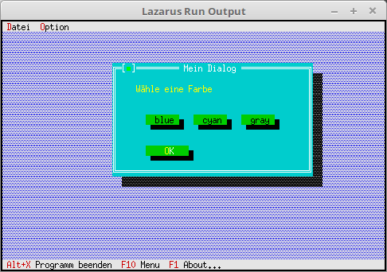

04 Dialoge als Komponente
15 Verschiedene Dialog Farben

Einem Fenster/Dialog, kann man verschiedene FarbeSchema zuordnen.
Standardmässig wird folgendes verwendet:
Editor-Fenster : Blau
Dialog : Grau
Hilfe-Fenster : Cyan
Ohne Zutun, kommen die Fenster/Dialog immer in der richtigen Farbe.
Eine Modifizierung ist nur in speziellen Fällen von Sinnen.
Unit mit dem neuen Dialog.
Mit den 3 oberen Button, kann man das Farb-Schema des Dialoges ändern.
unit MyDialog;
Hier sind 3 Event-Konstante hinzugekommen.
type
PMyDialog = ^TMyDialog;
TMyDialog = object(TDialog)
const
cmBlue = 1006;
cmCyan = 1007;
cmGray = 1008;
var
CounterButton: PButton; // Button mit Zähler.
constructor Init;
procedure HandleEvent(var Event: TEvent); virtual;
end;
Das Bauen des Dialoges ist nichts besonderes.
constructor TMyDialog.Init;
var
R: TRect;
begin
R.Assign(0, 0, 42, 11);
R.Move(23, 3);
inherited Init(R, 'Mein Dialog');
// StaticText
R.Assign(5, 2, 41, 8);
Insert(new(PStaticText, Init(R, 'W' + #132 + 'hle eine Farbe')));
// Farbe
R.Assign(7, 5, 15, 7);
Insert(new(PButton, Init(R, 'blue', cmBlue, bfNormal)));
R.Assign(17, 5, 25, 7);
Insert(new(PButton, Init(R, 'cyan', cmCyan, bfNormal)));
R.Assign(27, 5, 35, 7);
Insert(new(PButton, Init(R, 'gray', cmGray, bfNormal)));
// Ok-Button
R.Assign(7, 8, 17, 10);
Insert(new(PButton, Init(R, '~O~K', cmOK, bfDefault)));
end;
Hier werden die Farb-Schemas mit Hilfe von Palette := dpxxx geändert.
Auch hier ist wichtig, das man Draw aufruft, diemal nicht für eine Komponente, sonder für den ganzen Dialog.
procedure TMyDialog.HandleEvent(var Event: TEvent);
begin
inherited HandleEvent(Event); // Vorfahre aufrufen.
case Event.What of
evCommand: begin
case Event.Command of
cmBlue: begin
Palette := dpBlueDialog; // Palette zuordnen, hier blau.
Draw; // Dialog neu zeichnen.
ClearEvent(Event); // Das Event ist abgeschlossen.
end;
cmCyan: begin
Palette := dpCyanDialog;
Draw;
ClearEvent(Event);
end;
cmGray: begin
Palette := dpGrayDialog;
Draw;
ClearEvent(Event);
end;
end;
end;
end;
end;